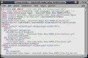
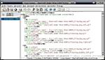
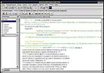
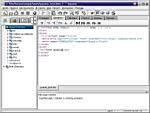
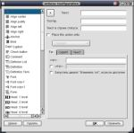
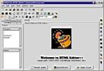
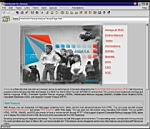

HTML по-пингвиньи
Сергей ЯРЕМЧУК. Источник - "Мой компьютер
Weekly"
У каждого компьютерного пользователя рано или поздно
возникает желание как-то преподнести себя, а заодно и свои
идеи другим людям. Как лучше всего это сделать средствами
компьютера? Те, кто советуют заняться рассылкой спама, тоже в
чем-то правы (подробнее об этом не вполне хорошем занятии
читайте в статье Виктора В. ПУШКАРЯ ?Перловая каша в
ящике из-под мыла?, МК ?43(214)). Но лучше все же создать
свою web-страничку и поместить ее на каком-нибудь сервере в
Интернете, а затем раздать всем своим знакомым ссылки на ваше
произведение. Для того чтобы создать свою страничку, удобнее
всего воспользоваться каким-либо специализированным редактором
HTML-кода. Для ОС Windows их навалом, и большинство их
известно. Давайте же посмотрим, как обстоят дела на пингвиньем
острове.
К сожалению, ожидать большого разнообразия таких программ
не приходится: зайдя на архивные сайты, обнаруживаешь, что
большинство из предлагаемых вариантов — консольные
конвертеры из различных форматов в HTML типа text2html,
lex2html и др. (см. статью ?Формат
трансформации?, МК ?43(214)). Хотя и такие программы
находят свое применение в работе, для создания серьезного
web-проекта они не годятся. Еще некоторая часть программ
является своеобразными надстройками над обычными текстовыми
редакторами типа vi и Emacs. В итоге
web-редакторов в чистом виде оказывается не так уж много. А
если учитывать функциональность, поддержку работы с
кириллическими шрифтами, да и просто привередливость в
установке некоторых из них, то и того меньше. Итак, давайте же
по порядку разберемся, с помощью каких программ нам позволено
реально сделать web-страницу.
Для любителей говорить о превосходстве Notepad?а в деле
создания web-страниц (а на самом деле пользующихся FAR'ом с
соответствующим плагином — удобнее все-таки) скажу, что
практически все текстовые редакторы, которые вы можете
встретить в Linux, поддерживают подсветку синтаксиса HTML, да
и не только. Так что эта категория web-разработчиков у нас не
почувствует себя в чем-то ущемленной. Я, например, для работы
люблю использовать nedit и kate
(Рис. 1, 2). Первый — по
причине легкости и еще, наверное, по традиции; во втором мне
нравится удобный многодокументный интерфейс.


Но вернемся к web-редакторам. Они делятся на две
категории — HTML-редакторы и WYSIWYG-редакторы (What You
See Is What You Get). Лучшие представители позволяют работать
с кодом как напрямую, так и с помощью визуальных средств, т.е.
сочетают в себе возможности сразу двух вышеозначенных
категорий программ. Спорить о том, какие средства лучше, не
буду, просто расскажу о программах, с которыми имел дело.
HTML-редакторы
Начнем с bluefish. Домашняя страница — http://bluefish.openoffice.nl/, последняя

версия 0.7, размер .rpm-дистрибутива 670 Кб,
tar.gz — 1.9 Mб; данный редактор входит в
большинство дистрибутивов Linux. Bluefish в первую очередь
ориентирован на применение в рабочей среде Gnome и основан на
библиотеке GTK — достаточно установить последнюю, и
web-редактор будет работать под любым другим оконным
менеджером (см. статью ?Покажи мне свой Linux, и я скажу,
кто ты?, МК ?44(215)). Многие опции будут доступны только
при компиляции с библиотекой GTK2. После запуска перед вами
предстанет окно с полоской меню, под которыми имеется
главная инструментальная панель, предназначенная для
основных операций с файлами:
открытия, записи, закрытия,
поиска, конфигурирования, печати, проверки орфографии
и т.д. (
Рис. 3). Ниже расположена
строка закладок, предназначенная для вставки HTML-кода
в документ; все закладки для удобства сгруппированы по
группам. Для вставки в HTML-документ всех необходимых
атрибутов (HEAD, TITLE, BODY etc.) служит панель
Quick
start, где они доступны в виде отдельных кнопок.
Назначение остальных панелей —
Fonts,
Tables,
Frames,
Forms,
Lists,
CSS,
Javascript,
WML — ясно из
названия. На панели
Other доступны заготовки для
некоторых функций
PHP3,
PHP4 (см. цикл
статей Артема Cosmic ШМАНЦЫРЕВА ?Сервер племени апачей?,
МК ??38-40, 42, 44, 46 (209-211, 213, 215, 217)),
SSI
(см. статью Дениса ТИМОШЕНКО ?Что сулит нам SSI??,
МК ?46(217)) и
RXML; общим числом более 900, зато
вообще нет документации. Хочется еще обратить внимание на то,
что кроме функции прямой вставки рисунка к услугам
пользователя кнопка
Thumbnail, позволяющая
автоматически создавать миниатюру изображения в любом
выбираемом пользователем масштабе в форматах .jpeg, .gif и
.png, причем предусмотрена выдача альтернативного текста для
браузеров с отключенным выводом изображений; есть возможность
задания рамок и других атрибутов. Для того чтобы данная
функция нормально работала, расширение генерируемого файла
должно быть выставлено то же, что и у исходного
(
View > Preferences > Files and
Images > Thumbnail type). Bluefish позволяет
работать с проектами (правда, на весьма примитивном уровне);
можно добавить, убрать файлы с проекта, а также редактировать
основные тэги всквозную для всех файлов проекта. Понравился
мне встроенный
генератор CSS. Поиск и замена текста
возможна в двух вариантах:
POSIX и
Perl.
Реализована проверка орфографии с помощью внешней программы по
умолчанию
ispell, пользователь может дополнительно
указать свой словарь. Bluefish поддерживает большинство
кодировок, включая UTF8, и проблем с кириллицей у вас не
возникнет. Чтобы отредактировать файл, достаточно просто
перетащить его. Да, конфигурирование я запускал с опциями
./configure --with-internal-preview --with-perl. Созданный
документ можно просмотреть во внешнем браузере, по умолчанию
это Netscape. Имеется возможность подключения внешних программ
и фильтров, а если и этого будет мало, то есть дополнительная
панель
Custom, куда можно добавить необходимые ссылки
на заготовки скриптов или еще чего-нибудь. А вот чего уж точно
не было в версии 3.5, с которой я был знаком
раннее, — это самонастраиваемой подсветка синтаксиса,
основанной на регулярных выражениях Perl и понимающей языки
HTML, PHP, C, Java, XML и Python (цвета, кстати, можно
настроить по своему вкусу). Bluefish можно встретить не только
в Linux, а еще и в Free(Net, Open)BSD, Solaris и HP-UX.
Следующим HTML-редактором, который мы рассмотрим, будет
творение наших земляков Дмитрия Поплавского и Александра
Яковлева под названием Quanta (Рис. 4).
Домашняя страница — http://quanta.sourceforge.net/ (очевидно в
связи с тем, что

Quanta ориентирована на библиотеки KDE),
последняя версия редактора —
3.0, объем
загружаемого файла уже побольше будет, около 2.1 Mб.
Версия 3.0, скачанная мной из Интернета, практически ничем не
отличалась от версии 2.2, установленной вместе с Red
Hat 7.3. Даже заставку не успели переделать — при
загрузке программа представлялась как 2.2. Изменения, врочем,
носят скорее косметический характер, так что можно не спешить
с переходом на более высокую версию. Надеюсь, пока. Установка
прошла без каких либо усложнений, и после второго запуска меню
русифицировалось само собой после установки параметра
Default encoding в родное
koi8-r. Хотя, не в
пример тому же bluefish, панель можно полностью настраивать по
своему вкусу: перемещать уже созданные пункты меню, изменять
названия, всплывающие подсказки, текст в строке статуса и,
главное, добавлять свои пункты. Все это доступно в пункте меню
Настройки > Действия (
Рис. 5). А
учитывая возможность изменения шрифтов, режимов подсветки для
множества языков программирования (включая и
С#) и даже
для файлов конфигурации игр (Quake, Half-life,
Wolfenstein — все это заслуга библиотек
Qt), а
также отступы, переносы слов и пр., то за гибкость
настроек можно смело ставить пятерку. И еще что мне нравится в
Quanta, так это
документация. Если она у вас не
установлена, ее можно взять с сайта проекта, хоть, скорее
всего, вы найдете ее в стандартной упаковке. Так вот, здесь
можно найти практически всю информацию о тэгах HTML, о
структуре языков, функциях JavaScript и PHP, а также об
использовании CSS и, конечно же, по настройке самой Quanta.
Все кратко, с примерами и необходимыми разъяснениями —
для тех, кто обладает хоть какими-то знаниями английского
языка, это будет неплохим учебником на первых порах.
Для ускорения создания нового документа предусмотрена
клавиша Quick start, позволяющая автоматически
сгенерировать необходимые атрибуты нового документа. Меню и
панель инструментов позволяют вставлять наиболее часто
используемые тэги, а при вставке таблиц, рисунков и списков в
коде появляется соответствующая заготовка, в которой можно
назначить необходимые параметры разметки. Предусмотрена
возможность автоматического редактирования тэгов и их
атрибутов посредством главного или контекстного меню (путем
выбора пунктов Edit cutten tag и Attributes of
tag), а также горячих клавиш. Имеется возможность работы с
проектами, немного более продвинутая, нежели в bluefish. И,
наконец, венчающая процесс работы загрузка всего проекта на
сервер для публикации — для этого

необходимо указать имя, адрес сервера, логин и
пароль.
Следующей будет чашка кофе. Нет это не перерыв на
обед — программа так и называется: CoffeCup,
производитель CoffeCup Software Inc. До недавнего
времени эта программа распространялась как shareware, теперь
же она доступна для свободного скачивания — видимо,
разработчики поняли, что на пингвинах в смысле наживы далеко
не уедешь, да и релиз программы датируется уже далеким
1999 годом. Установка данной софтины отличается от
стандартной, принятой в Linux (./configure, make, make
install). Необходимо просто запустить скрипт Coffe_install, и
дальше вся установка происходит в графическом режиме, в духе
?откиньтесь на спинку кресла и наблюдайте?, как в OpenOffice.
Кстати, программу установки может запустить и обычный
пользователь. Размер дистрибутива — 2.8 Mб. Так как
строка для запуска получается очень длинная —
/usr/bin/CoffeCup.Software/HTMLEditor/Coffe, — то удобнее
всего создать символическую ссылку в каталоге $HOME/bin с
помощью команды ln -s (конечно, если данный каталог
прописан в переменной PATH). Интерфейс не очень-то впечатляет,
как эстетически так и эргономически — маленькие кнопки,
назначение которых не сразу понятно; впрочем, ко всему можно
привыкнуть, благо всплывающие подсказки помогают
(Рис. 6). Что не очень удобно, так это то, что
панели (а их четыре) настроить невозможно, получается, что они
без толку занимают половину экрана. Документации как таковой
нет, точнее, есть, но все ссылки ведут на сайт разработчиков.
Кроме ставшей уже стандартом кнопки Quick start,
большинство элементов, требующих ввода каких-либо
дополнительных параметров в тэги (шрифт, цвет, e-mail,
таблицы, списки и даже просто горизонтальная линия), вызывают
появление соответствующего designer'a. Практически все тэги
можно вставить, выбрав их из выпадающего списка, а для вставки
специальных символов есть отдельная кнопка. Программа
поставляется с собственной с коллекцией звуковых файлов и
рисунков — последние можно прикинуть в окне браузера,
нажав для этого кнопку Image gallery. А вот
действительно то, что отличает данную программу от других, это
наличие 50 готовых JavaScript-, 10 DHTML- и
5 CGI-скриптов. Естественно, можно дополнить их своими
заготовками — для этого добавьте их в файлы
javascript.dat, dhtml.dat, cgi.dat, которые находятся в
каталоге, куда вы установили CoffeCup. Имеется возможность
загрузки всего проекта на сервер с помощью внешней программы
gFtp. Один недостаток — отсутствие подсветки
синтаксиса. Может, это и необязательно, но очень уж его не
хватает.
Вот, в принципе, и все HTML-редакторы, которые мне удалось
заставить работать и которые стоят того, чтобы обратить на них
внимание. Все они дружат с кириллицей, только не забудьте
установить соответствующий шрифт, если будут кракозябры. В
каком из них работать, выбирать вам — все они в той или
иной мере функциональны, имеют свои достоинства и недостатки.
Я, например, до недавнего времени предпочитал Quanta, теперь
же, установив новый bluefish, стал колебаться. Что до
CoffeCup, то мне в нем нравятся коллекции и дизайнеры,
выполняющие за вас кучу работы. Должно быть, он порадует
начинающего web-дизайнера. Эх, попадись он

мне раньше!
За бортом незаслуженно остался WebMaker (последняя
версия 0.8.5 датирована 6 ноября 1999 года),
ссылку на дистрибутив которого я нашел на http://unixware.ru/. несмотря на почтенный
возраст, это полнофукциональный HTML-редактор, имеющий богатые
меню, панель инструментов, поддерживающий HTML 4.0,
имеющий подсветку синтаксиса, к тому же работающий с
программами, которые поддерживают stdin/stdout; интегрируется
в меню KDE. Для установки программы потребуется наличие
библиотеки Qt 1.42. Еще стоит упомянуть
Screem, последняя версия 0.4.1, домашняя
страница http://www.screem.org/. Довольно неплохой
HTML-редактор, обладающий подсветкой синтаксиса, возможностью
автоматического построения карты сайта и подключения
неограниченного количества внешних браузеров. Но данная версия
совпадает с той, которая была у меня на аж восьмом
Mandrake, т.е. давно не обновлялась, к тому же у
данного редактора всегда была репутация привередливого в
установке. Так что, помучившись с ним недельку, я
отступил — может, кому повезет больше. Остальные
редакторы HTML-кода, такие как asWedit и Erwin,
ссылки на которые можно найти на http://linux.tucows.com/, не стоят внимания
по причине малой своей функциональности и, главное, отсутствия
поддержки кириллического шрифта (настроить, конечно, можно, но
стоит ли возиться?)
WYSIWYG-редакторы
А вот с WYSIWYG-редакторами дела обстоят еще хуже. Мне
удалось найти аж два таких. Перво-наперво это Amaya
(последняя версия 6.1, разработка консорциума W3C
(World Wide Web Consortium)) — его можно найти на http://www.w3c.org/. В принципе, довольно
неплохой (даже хороший) редактор (Рис. 7), имеющий
кроме

визуального еще и режим прямого редактирования
получаемого HTML-кода (включается через
Views >
Show source), который открывается в отдельном окне и
позволяет синхронизировать внесенные изменения, чтобы можно
было сразу увидеть результат (
File >
Synchronize). Имеет встроенный браузер, в котором мне
понравился режим отображения структуры документа. Позволяет
работать также с документами в форматах
XHTML
(Extensible Hypertext Markup Language),
MathML
(Mathematical Markup Language),
SVG (Scalable
Vector Graphics) и создавать
CSS. Но при всех его
положительных сторонах, есть одно маленькое ?но?, которое
сразу исключает его из списка: он ни в какую не желает
понимать кириллические шрифты.
И второй редактор — это IBM WebSphere Homepage
Builder 4.0, как видно из названия, продукт
?голубого? гиганта, фирмы IBM (http://www.ibm.com/). Вот это уже
действительно хороший продукт, но, увы, не бесплатный. С сайта
доступна лишь демо-версия. А слова ?платить? и ?Linux? для
меня являются антонимами, поэтому я ее описывать принципиально
не буду.
Вот, к сожалению, и все, что можно сказать по этому
вопросу. Мало? Двумя годами раньше было, наверное, и того
меньше, так что есть повод порадоваться прогрессу: может, и на
нашей улице свой FrontPage скоро будет? Впрочем, то, что есть,
вполне можно использовать в таком кропотливом деле как
создание своего сайта. Я надеюсь, что еще одним белым пятном
на карте острова пингвинов стало меньше.
Linux forever!